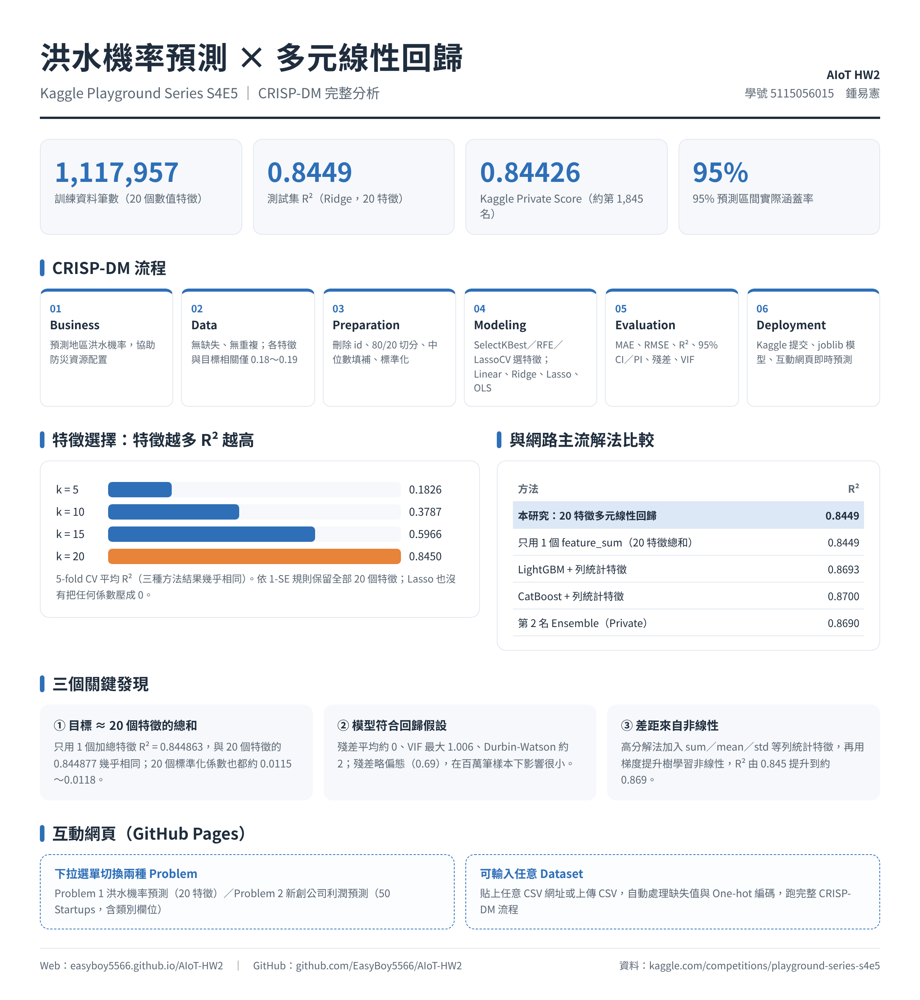

設定資料與模型
排除的欄位（ID 等）
Business Understanding
前 10 筆資料
欄位資訊
描述統計
目標變數分布
各特徵與目標的相關係數
相關係數熱力圖（Pearson，訓練集）
Data Preparation
編碼後特徵
4.1 Feature Selection：三種方法 × 不同特徵數的 CV R²
4.2 模型建立：LinearRegression／Ridge／Lasso／OLS
OLS 係數
標準化係數（特徵增加 1 個標準差的影響）
5.1 測試集評估指標
5.2 預測圖：95% 信賴區間與預測區間
實際值 vs 預測值
殘差 vs 預測值
5.3 殘差診斷與五大回歸假設
Deployment：輸入特徵值，即時預測
預設值為訓練集的中位數／眾數；修改任一欄位會立即重新預測。95% 區間由 OLS 模型（選用特徵）計算。
部署方式：本網頁為純 HTML + JavaScript，部署於 GitHub Pages，所有運算都在使用者的瀏覽器中完成；模型也可以用 Notebook 中的 joblib 檔包成 FastAPI／Flask API，或以批次排程對新資料定期預測。
網路主流解法比較（Kaggle S4E5）
| 方法 | 代表成績 | 優點 | 限制 |
|---|---|---|---|
| 本研究：20 特徵多元線性回歸（Ridge／OLS） | 測試 R² 0.8449；Kaggle Private 0.84426 | 訓練快、係數可解釋 | 無法捕捉非線性與交互作用 |
| 特徵加總 feature_sum + 線性回歸 | 測試 R² 0.8449（只用 1 個特徵） | 證實目標主要由 20 特徵總和決定 | 與原始特徵同時使用會完全共線 |
| 列統計特徵（sum／mean／std／skew…） | Kaggle 高分討論核心技巧 | 提供分布形狀與非線性資訊 | 特徵冗餘，需交叉驗證確認增益 |
| LightGBM／CatBoost + 統計特徵 | CV R² 約 0.869～0.870 | 可學習非線性與局部交互作用 | 需調參、可解釋性較低 |
| Ensemble／Blending（第 2 名解法） | Public 0.86943／Private 0.86902 | 降低單一模型誤差 | 模型繁多，訓練與維護成本高 |
Kaggle 公開分析指出目標值近似由 20 個特徵的總和決定，所以線性回歸已能抓到主要訊號；高分解法再加入列統計特徵，用梯度提升樹學習剩下的非線性部分，R² 由約 0.845 提升到約 0.869。
NotebookLM 摘要
參賽者主要使用梯度提升樹模型（CatBoost、LightGBM、XGBoost），並結合線性模型（Linear Regression、Ridge）與模型融合（Blending／Ensemble）提升表現。特徵工程是拿高分的關鍵，最核心的做法是跨特徵的列統計量，例如每筆資料 20 個特徵的總和、平均值、標準差、中位數、偏度與熵。加入進階列統計特徵後，CatBoost 單模 CV R² 達 0.87003，LightGBM 約 0.86931。線性回歸的優點是訓練極快，只用特徵總和就能得到約 0.844～0.846 的基準分數；缺點是無法捕捉非線性與特徵交互作用，因此上限受限。
由 NotebookLM 根據 7 個網路來源（Kaggle 競賽頁、討論區與高分 Notebook）產生。
GPT 輔助內容
本作業使用 ChatGPT 依 CRISP-DM 各階段協助撰寫 Colab 程式（EDA、前處理、特徵選擇、模型、預測區間、殘差診斷、部署）與整理網路解法；所有數值皆為實際執行的結果。本網頁程式由 AI 協助撰寫，回歸運算已與 Python（scikit-learn／statsmodels）結果逐項核對。
資訊圖表
